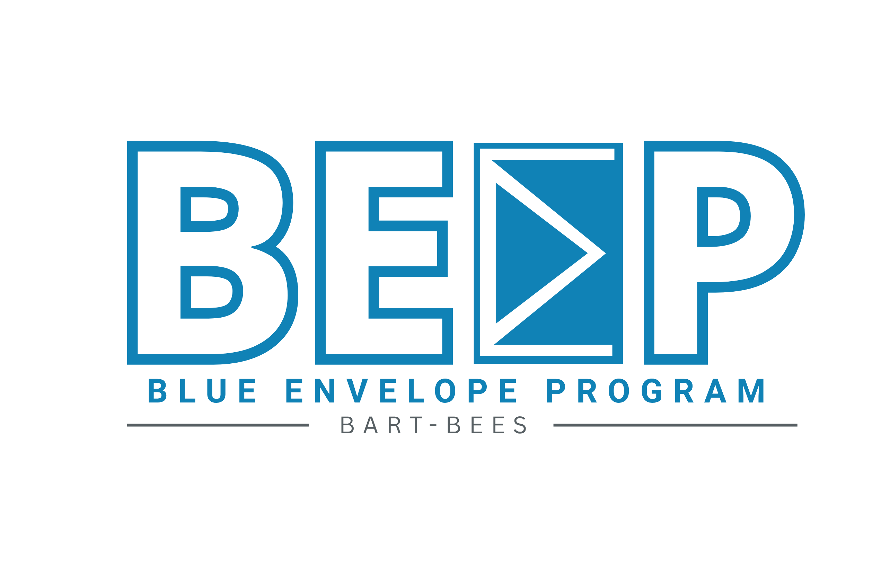

RESEARCH • DESIGN • TECHNOLOGY
BEEP - BART | 2026
Blue Envelope Program for Riders with Hidden Disabilities
Created BEEP during my BART internship, a concept designed to help riders with hidden disabilities communicate their needs to frontline employees through a simple, accessible system.
View Project →